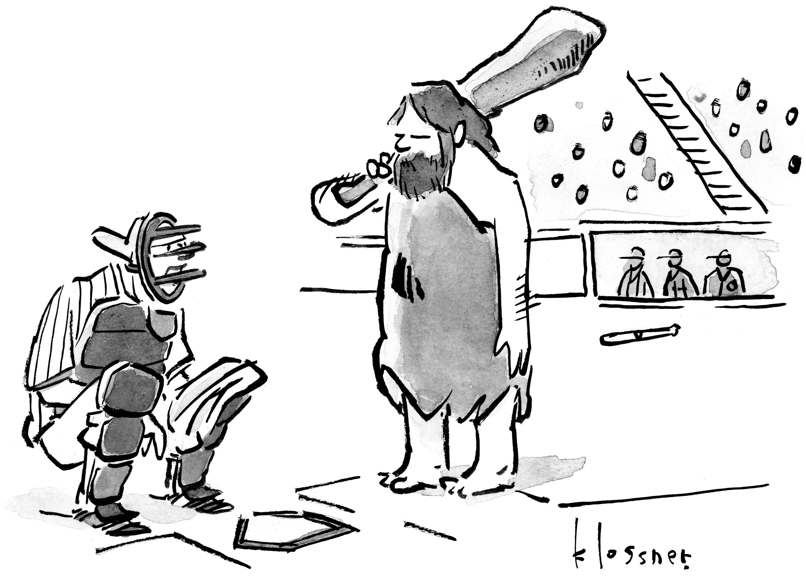

From 2 million captions from New Yorker cartoon contest, top funnitest captions were chosen by the number of votes to find out what makes a line land.
Each square is a caption. Position reflects vote score and variance.

Contest 895:"If they know where we are, then they're more advanced than we thought."

Contest 890:"This restaurant has only 5 stars"
Contest 652:"See any Lifesavers?"

Contest 512: "I get it: you're angry with the donor-class Yoga establishment."

>Contest 773: "I guess I should have said "cheers" instead of "bottoms up.""

Contest 783: "It's perfectly normal to feel depressed around the hollandaise."
Contest 605: "We're in the lower floor of IKEA....where are you?"

Contest 625: "How long you been with the club?"

Contest 653: "Meet Trump's nominee for the Centers for Disease Control."

Contest 761: "He said he's welcoming us to the neighborhood. Do you remember moving?"
Each cluster has a tone, a style, a rhythm — and an audience. Context completes the joke.